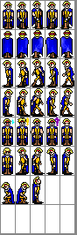
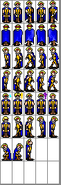

by Grue of VERGE Games. Available on github
WASD for some primitive movement.
press 'M' to MUTE. Press 'o' to toggle obstructions.
Get Firefox?
(This version of Horace Wimp's Aurora.mod from http://www.dwedit.org/nes/nsf.php)
 
